IDAC
Status
ID
Version
Certificate expiration date
Storage
CPU
RAM
Site
Upstream
Hostname
Host address
ONLINE
OFFLINE
80b1e8fd
v6.4.1
Nov 4, 2024, 7:19 AM
104GB Total / 62G Free
2
4G Total / 3G Free
Default
tcp.domain.com
IP 172.31.169.154
100.100.100.2
Gateway
Regional gateway
DNS domains
CIDR
IDACs
Latency
Global Cloud
tcp.domain.com
domain.com
255.0.0.0
12
25ms
Gateway address
Port
172.16.0.0
443
Domain address
tcp.domain.com
1
2
6
17
1
6
17
1
4
18